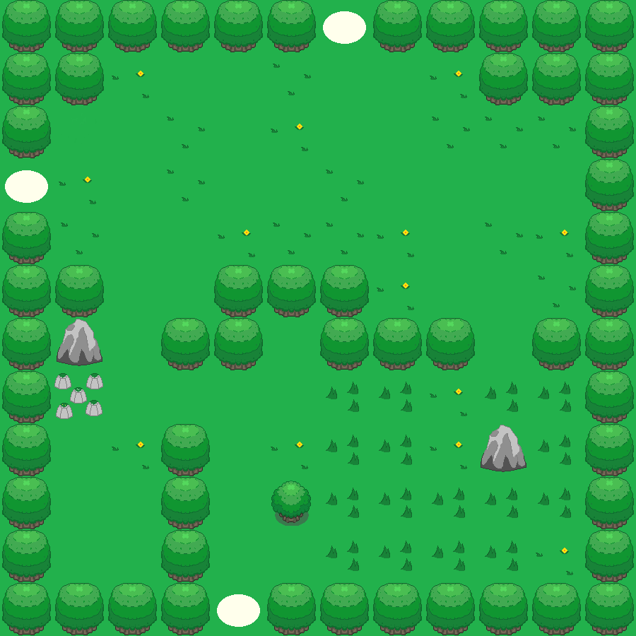

Nous cherchions un projet qui nous permettrait d'exploiter les ressources de Processing, le logiciel de programmation dont nous disposions. Le concept de jeu vidéo s'est très vite imposé car il permet d'exploiter les fonctionnalités graphiques et musicales du logiciel, tout en nous imposant des défis de programmation.
Nous avons construit notre projet à partir de notre culture personnelle. Or, notre principale expérience de l'informatique s'est faite par les jeux vidéos. Nous nous sommes donc inspirés de références du genre pour établir la structure de notre jeu: un personnage incarnant le joueur, qui évolue à travers différents niveaux pour survivre et atteindre un objectif.
|  | |
|---|
Au cours de cette année scolaire, tout comme un TPE, l’ISN propose un projet noté à concevoir en groupe autonome. Ce projet doit mettre en évidence des compétence propre à l’informatique et aux sciences du numérique.
Ainsi après quelque cours nous apprenant les bases avec des logiciels de programmation comme Processing et Java-school l’heure fut venue de choisir et de concevoir notre projet !
Au sein de notre groupe nous étions d’accord sur une chose : nous utiliserons Processing, qui code en java et notre but serait de faire un jeu vidéo. Mais lequel ?
Pour ne pas complexifier les choses, le style du jeu serait retro (comme les premiers mario ou comme pac-man) en effet les graphismes en seraient plus “carré”. après quelques réflexions nous avons décidé de faire un jeu de plateforme comme mario car dans les faits cela semblait assez simple à faire. Les déplacements latéraux de notre carré (les images du perso n'étant pas encore dessinés) furent assez simple car nous nous sommes inspiré d’un jeu créer avec notre professeur, mais le déplacement verticale fut impossible à coder (en raison de la gravité).
soit le perso restait en haut soit il ne décollait pas du sol.
Nous avons donc compris que le déplacement case par case, une caméra fixée sur la carte (comme dans les vieux zelda) étaient à notre portée d’apprenti développeur.
Ce qu’on voulait c'était une aventure mobile ou l’on traverserait des mondes et non un jeu figée comme Pac-man ou tetris, où des ennemis serait la pour entraver notre quête.
C’est ainsi qu’est né “A classic Tale “ mettant en scène notre petit héros chauve parcourant différents biomes esquivant des monstres variés .